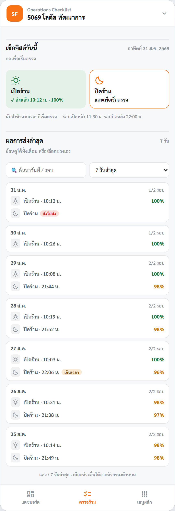
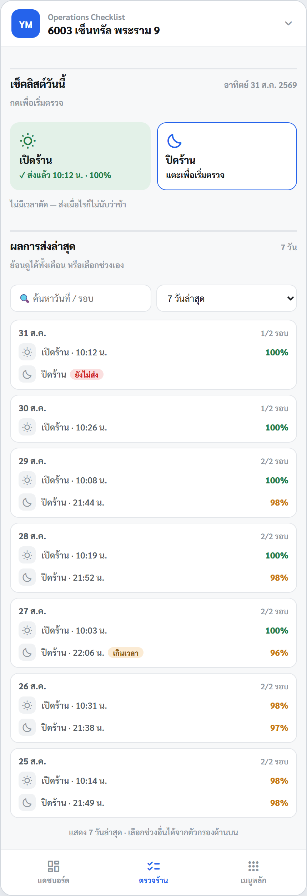
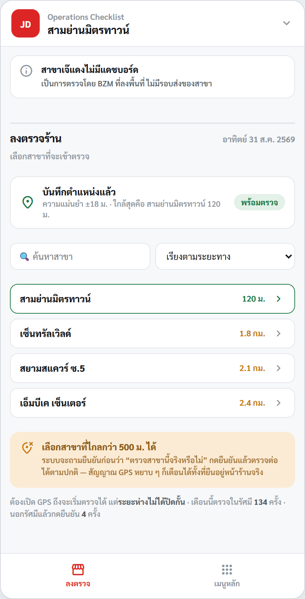
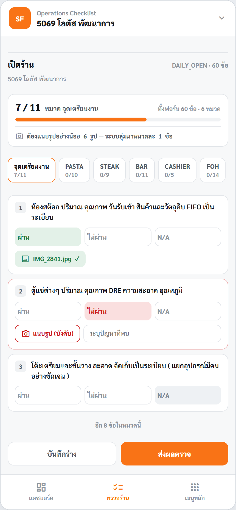
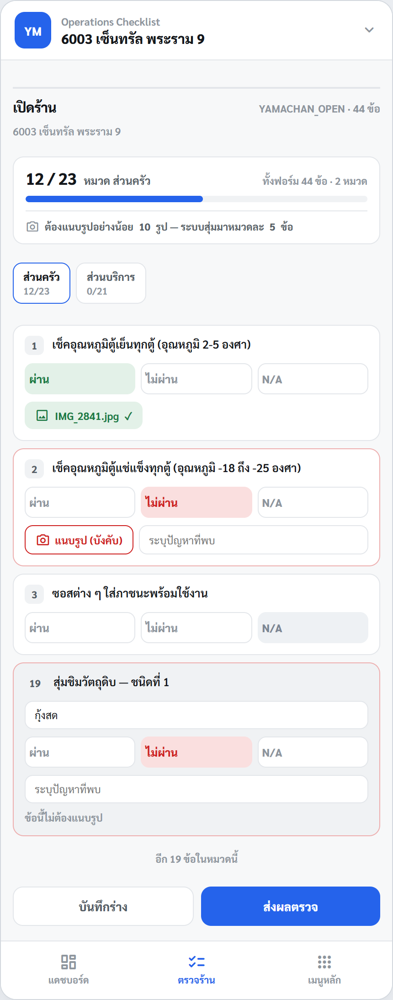
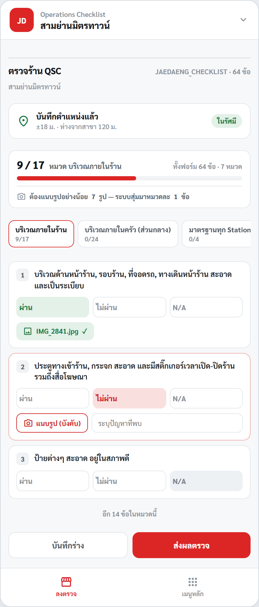

นี่คือหน้าจอที่ต่างกันมากที่สุดระหว่างแบรนด์ — ทั้งจำนวนหมวด กติกาการแนบรูป และใครเป็นคนกรอก
ชื่อหมวดกับจำนวนข้อดึงมาจากฟอร์มจริงในโค้ด (DAILY_OPEN · YAMACHAN_OPEN · JAEDAENG_CHECKLIST)






| เรื่อง | Santa Fe' | ยามะจัง | เจ๊แดง |
|---|---|---|---|
| ใครกรอก | สาขากรอกเอง | สาขากรอกเอง | BZM ลงพื้นที่ไปตรวจ |
| รอบ | เปิดร้าน / ปิดร้าน | เปิดร้าน / ปิดร้าน | ไม่มีรอบ — เป็นครั้ง |
| เปิดร้าน | 6 หมวด · 60 ข้อ | 2 หมวด · 44 ข้อ | 7 หมวด · 64 ข้อ (ชุดเดียว ไม่แยกรอบ) |
| ปิดร้าน | 6 หมวด · 43 ข้อ | 2 หมวด · 36 ข้อ | |
| ชื่อหมวด | จุดเตรียมงาน · PASTA · STEAK · BAR · CASHIER · FOH | ส่วนครัว (23) · ส่วนบริการ (21) | บริเวณภายในร้าน (17) · ครัวส่วนกลาง (24) · มาตรฐานทุก Station (4) · ส้มตำ (4) · ย่าง-ทอด (6) · ต้ม-ลาบ-น้ำตก-ยำ (3) · ทีมบริหารร้าน (6) |
| ฟอร์มย่อย | สาขา 55 (ST_Easy) ใช้คนละชุด — 52 / 36 ข้อ | — | — |
| แนบรูปเมื่อไม่ผ่าน | บังคับ | บังคับ | บังคับ |
| ระบบสุ่มขอรูป | 1 ข้อต่อหมวด | 5 ข้อต่อหมวด | 1 ข้อต่อหมวด |
| รูปขั้นต่ำต่อการตรวจ | 6 รูป 1 × 6 หมวด | 10 รูป 5 × 2 หมวด | 7 รูป 1 × 7 หมวด |
| ข้อที่ยกเว้น | — | ข้อที่ขึ้นต้นว่า “สุ่มชิมวัตถุดิบ” |
รายการใน JAEDAENG_PHOTO_EXEMPT |
| ตอบ N/A | ไม่ต้องแนบรูป — แม้จะเป็นข้อที่ระบบสุ่มมาก็ตาม (เหมือนกันทุกแบรนด์) | ||
| GPS | ไม่มี | ไม่มี | ต้องเปิด GPS ถึงจะเริ่มตรวจได้ |
| เวลาตัดว่าช้า | เปิด 11:30 · ปิด 22:00 | ไม่มี | ไม่มี |
| แจ้ง Telegram | ไม่มี | ไม่มี | มี |